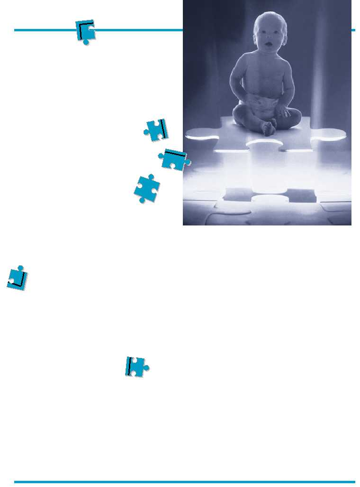

3
The number of children with “full spec-
trum,” or profound autism had increased by
273 percent – from 2,778 in 1987 to 10,360 in
1998 – more than tripling in one decade,
according to a 1999 report from California’s
State Department of Developmental Services.
While the article Increase in Autism Baffles
Experts, published in the October 18,
2002
issue of The New York Times, caught some by
surprise, it confirmed the suspicions of many
parents and therapists.
What was even more baffling is that sci-
entists could not attribute the rise to any one
specific cause such as genetics, birth injuries,
immunization, more accurate diagnosis, in-
creased awareness, population migration or
environmental factors. Whereas tradition-
ally it had been estimated that 4 or 5
children out of 10,000 might develop
autism, it appears that 10 children in
every 10,000 are seriously autistic.
IDENTIFYING
THE DISORDER
Autism, first described by doctors in 1943,
is a complex developmental disorder that can
severely impair children’s social interactions,
reasoning skills and ability to communicate.
Autism was once thought to be a disease of
upper-middle-class dysfunctional families. The
myth of the “refrigerator mother” – a parent
who failed to attach to the child – persisted
until the late 1960s, when research began
uncovering the neurological roots of the dis-
order.
Autism is a brain disorder that typically
affects a person’s ability to communicate, form
relationships with others and respond appro-
priately to the environment. Recently, scien-
tists have also identified some patterns of
brain abnormalities that may reveal an or-
ganic, biological basis for the disease.
Some people with autism are relatively
high functioning, their speech and intelligence
intact. Others are mentally retarded, mute or
with serious language delays. For some, au-
In-utero exposure to rubella, thalidomide,
or any birth defect causing substances in-
creases the chance that autism will develop.
Although studies failed to provide conclusive
answers as to what occurs or why, they did
tell us a great deal about when. In cases of
thalidomide-induced autism, the critical pe-
riod seems to have occurred as early as 20 –
24 days after conception, before many women
even know they are pregnant. The study con-
cluded that many cases of autism, if not all,
are initiated very early in gestation, implicat-
ing damage to the brain stem as a possible
cause.
Other scientists hypothesize that there
may be environmental triggers, as yet undis-
covered, which may “switch on” previously
dormant, faulty genes. This theory may ex-
plain why many children first exhibit symp-
toms of autism between 18 months and 3
years of age. This later onset of autism, often
coinciding with the period of time in which
children are first vaccinated, have led many
parents to attribute the disorder to the measles
virus or MMR vaccine given in early child-
hood. Studies indicate that although autism is
not purely genetic, the spectrum of symptoms
may run in families.
At present, there is no cure for autism, nor
do children outgrow it, but they do have the
capacity to learn and develop new skills. Those
Leah Schlager
PUTTING
PIECES TOGETHER:
UNDERSTANDING
AUTISM
tism makes them seem closed off and shut
down. Others seem locked into repetitive be-
haviors and rigid patterns of thinking.
Autism has sometimes been called “mind
blindness,” an attempt to describe how diffi-
cult it is for children with autism to be able to
imagine, or “see,” what’s going on in the
minds of others, an essential task for forming
social relationships. Many children with au-
tism don’t know, anticipate or react to what
others are thinking. This makes the world a
confusing, unreadable, unpredictable place
and contributes to the child’s isolation. As
one mother put it, “It’s as though someone
broke into my home, stole my child’s mind
and left his helpless body.”
HOW,
WHY, WHEN?
Autism has long been thought to have a
purely genetic basis, however, studies with
identical twins confirm that although the dis-
order has a heritable component, other influ-
ences play a role as well. Studies of identical
twins have shown that when one twin has
been diagnosed with autism, the second twin
has only a 60 percent chance of sharing the
diagnosis, (not 100 percent as had been pre-
supposed), and a 86 percent chance of having
some autistic symptoms.